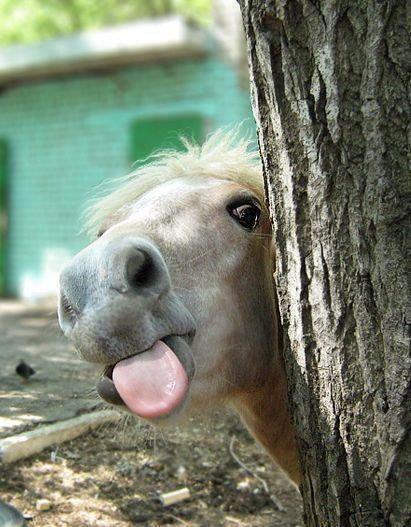

- Horseback Riding (Fall 2008-current): I have been taking horseback riding lessons since fall of 2008. In the spring of 2019, I began teaching lessons to beginner students, as well as assisting the barn owner with care and upkeep of the horses and barn.
- Babysitting (Summer 2016-current): I babysit for many families with children ages 0-12.
